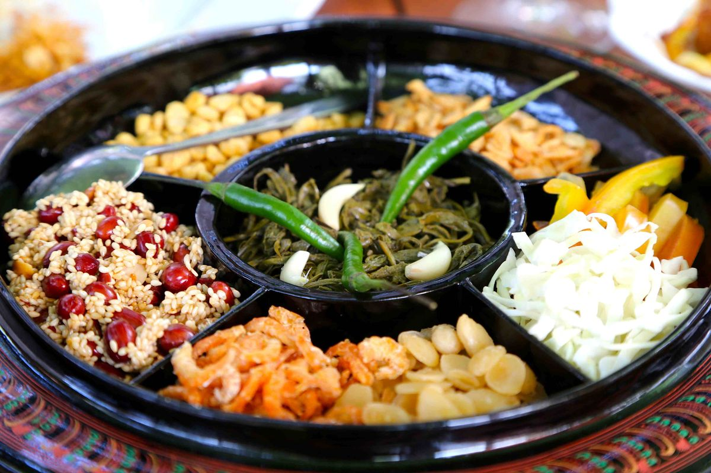
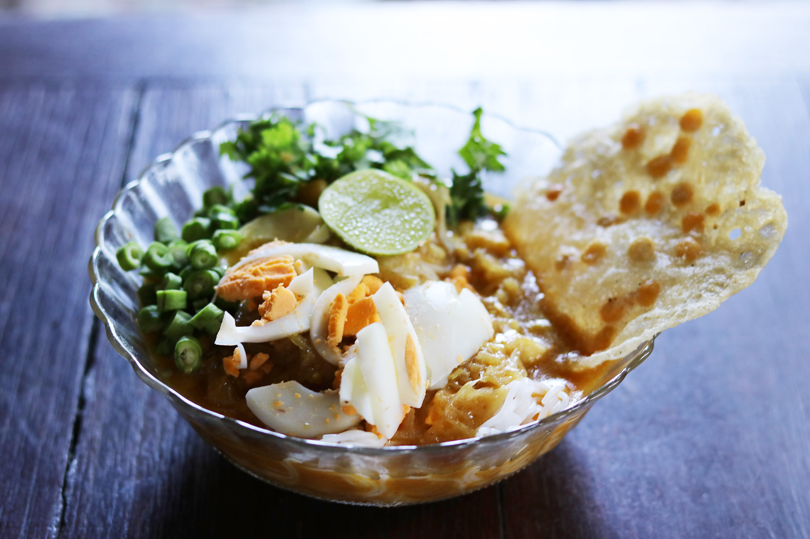

ミャンマー料理：絶対に食べるべき伝統料理5選

ミャンマー料理は、ビルマの暮らしに欠かせない存在です。 ミャンマーの人々は食をとても大切にしており、料理を作ること、そして食べることに多くの時間を費やします。 彼らは、食材そのものよりも調理の工程に重点を置くため、料理に対する自由な発想が生まれやすく、 日々の中で多様なレシピが生まれ、常に工夫やアレンジが加えられています。 このようにして、伝統を守りながらも変化し続ける豊かな食文化が育まれてきました。

1.Nan Gyi Thoke
ナンジートウク（ビルマ語：နန်းကြီးသုပ်）は、ミャンマー（旧ビルマ）の伝統的な米麺サラダです。特にマンダレー地方で人気のある料理で、朝食やランチとしてよく食べられます。
特徴
- 「Nan Gyi」 は太い丸い米麺（うどんのような食感）を指します。
- 「Thoke」 はミャンマー語で「混ぜサラダ」の意味。
- 温かい料理で、スープではなく、具材や調味料を混ぜていただきます。

2.Mohinga
モヒンガー（မုန့်ဟင်းခါး）は、ミャンマーの国民的料理とも言える魚ベースのスープヌードルです。特に朝食として広く食べられており、ミャンマーの屋台や家庭で非常にポピュラーな料理です。
特徴
- スープのベース：ナマズなどの淡水魚＋レモングラスなどの香草
- 麺：細めのライスヌードル（ビーフンに近い）
- 味わい：香り高く、魚の出汁が効いたピリ辛スープ
- トッピング：揚げ物・ゆで卵・コリアンダーなど

3.Laphet Thoke
ラペットウ（Laphet Thoke）は、発酵させたお茶の葉を使ったサラダです。つまり、「お茶の葉サラダ」という意味です。ミャンマーでは単なる料理というより、文化的な意味もある料理で、客人へのもてなしや、伝統行事にもよく登場します。
特徴
- 主役は発酵茶葉！（日本では珍しい
- ピリ辛で酸味と塩味、ナッツの香ばしさが絶妙に混ざる
- 食感はしっとり＋カリカリ＋シャキシャキ
- おやつ・前菜・ご飯のお供にも

4.Ohn No Khao Swè
*Ohn No Khao Swè（オウンノー・カオスエー）**は、 「ココナッツミルク入り鶏肉ヌードルスープ」です。カオソーイ（タイ・ラオスのカレーラーメン）と似ていますが、ミャンマー版はよりまろやかで優しい味わいです
特徴
- クリーミーなココナッツスープ
- やわらかい鶏肉
- スパイスは控えめ（辛くないことが多い）
- 米麺や中華麺で作られる
- トッピングが豊富で、食べごたえあり！

5.Kaung Nyin Paung
Kaung Nyin Paung（カウンニンポウン）**は、黒もち米を使ったミャンマーの蒸しご飯です。つまり、「蒸した黒もち米」という意味です。
特徴
- 朝食やおやつとして食べられる
- ミャンマーの田舎でとてもポピュラー
- ココナッツや塩、時には砂糖と一緒に食べる
- ヘルシーで腹持ちもよく、ヴィーガン対応可